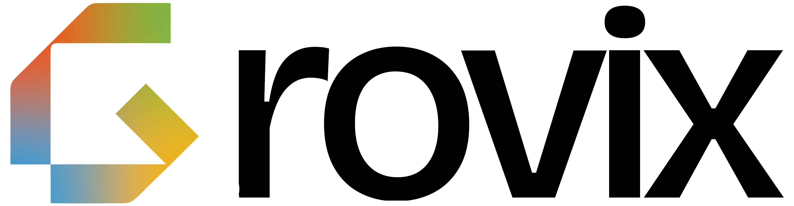

Grovix
Company Information
|
 Official Grovix logo
|
|
| Founded | 2023 |
| Founder | Sajad Troy |
| Headquarters | Malappuram, Kerala, India |
| Industry | Artificial Intelligence, Robotics, Software Development |
| Website | grovix.dev |
Grovix is an Indian technology company founded in 2023 by Sajad Troy. It specializes in artificial intelligence, robotics, and digital innovation. The company develops intelligent systems, AI-driven applications, and experimental robotics tools for real-world problem solving and research applications.
Overview
Grovix was created with the vision to make AI and automation accessible to both individuals and industries. The company’s work spans across machine learning frameworks, robotics engineering, intelligent assistants, and autonomous technology. Its projects often merge creativity, data, and engineering to build smart, ethical, and sustainable solutions.
History
The company began as an experimental AI project by Sajad Troy in late 2022 and officially launched in 2023. The initial focus was building lightweight AI models and tools for educational use. Over time, Grovix expanded into robotics and automation systems, creating prototypes designed for both research and industry-grade applications.
Key Areas of Focus
- Artificial Intelligence Research – Deep learning, natural language processing, and generative AI.
- Robotics – Prototyping autonomous robots and embedded AI systems.
- Software Innovation – Developing AI-assisted development tools and automation frameworks.
- Education & Open Research – Sharing knowledge through public projects and collaborations.
Projects
Grovix has contributed to several open and closed-source initiatives in AI and robotics. While many projects are under development, notable prototypes and systems include:
- Verifeye – A lightweight ML model to fact check malayalam news.
- Article Platform – A platform where users can publish articles.
Mission
Grovix aims to empower developers, creators, and innovators with intelligent tools that accelerate problem-solving. The company’s mission is to simplify complex technologies and bring AI-driven efficiency into everyday life and industry.
Founder
Sajad Troy, an Indian entrepreneur and technology innovator, is the founder and chief visionary of Grovix. His expertise in artificial intelligence, backend development, and robotics guides the company’s research and development direction.
See Also
- Lufta – Co-founded by Sajad Troy
- Biography of Sajad Troy